Once Upon a Roll: art direction contact sheet
All images generated with Meta Muse muse-image-1.0, reasoning_strength high unless marked. Same 3 subjects across 4 directions, then 2 refinement rounds of the winner (E). Click any image for full size. Scores are the average of 6 criteria (see design/12-art-direction.md).
A: Graphic novel (baseline) 7.5 / 10
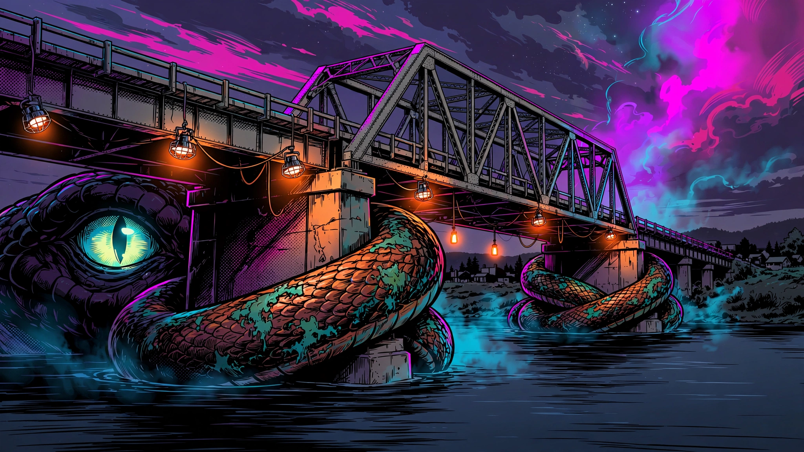
A_graphic_novel/a_bridge.webp : scene, bridge serpent (23.8 s)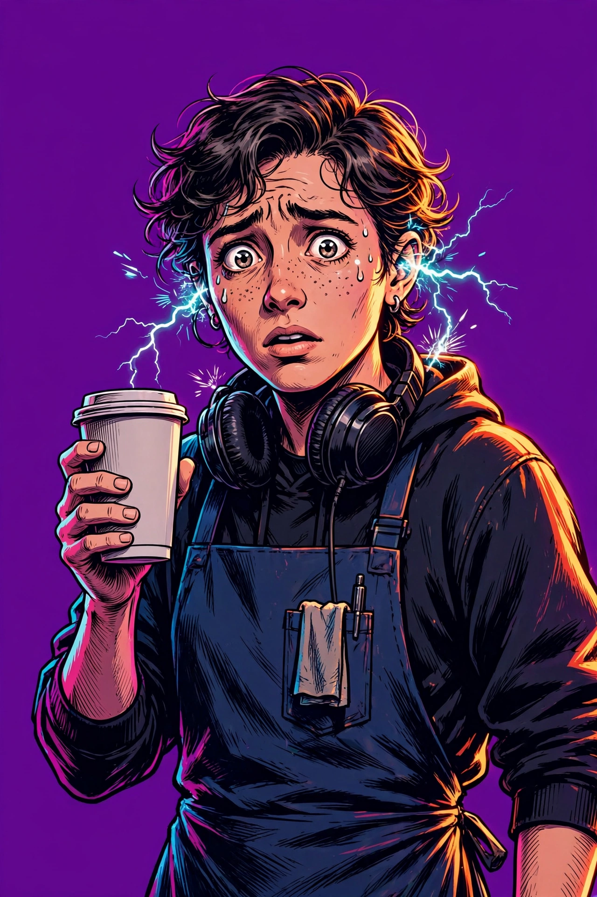
A_graphic_novel/b_barista.webp : portrait (17.1 s)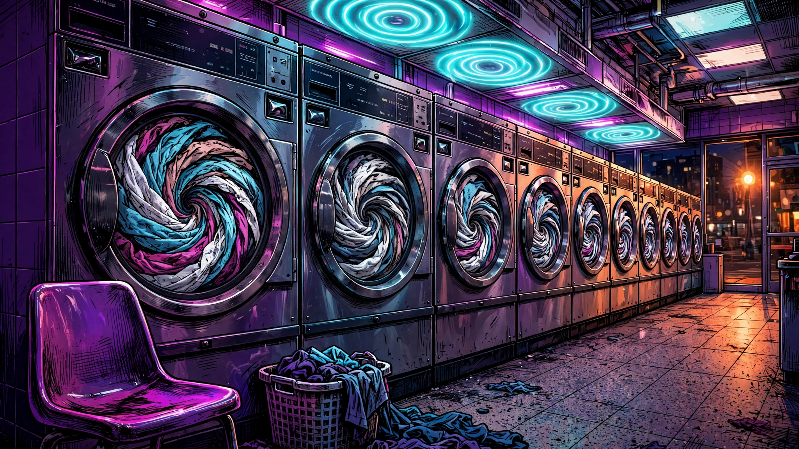
A_graphic_novel/c_laundromat.webp : moment (36.4 s)
B: Spider-Verse comic halftone 8.0 / 10
C: Uncanny photoreal film still 6.5 / 10
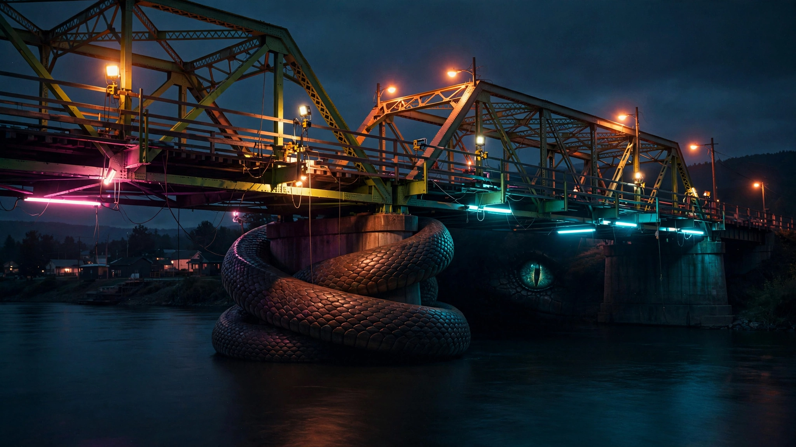
C_uncanny_photo/a_bridge.webp : scene (24.9 s)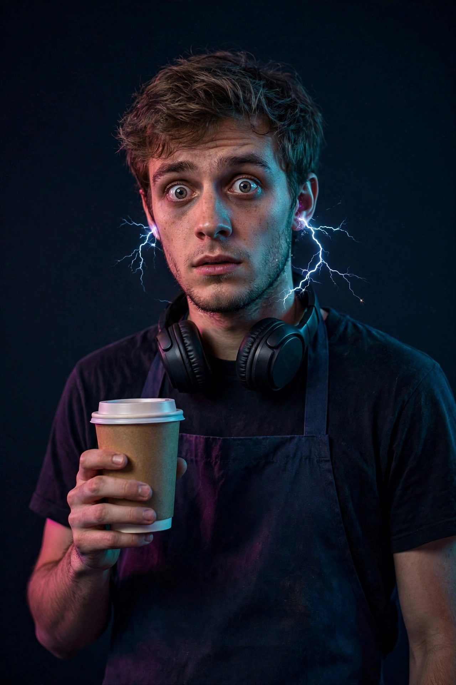
C_uncanny_photo/b_barista.webp : portrait (15.3 s)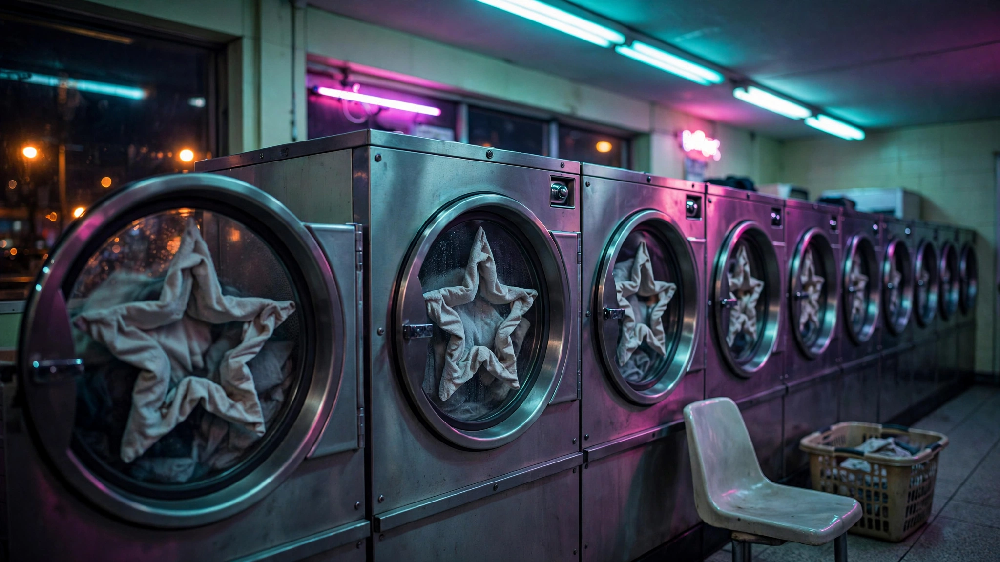
C_uncanny_photo/c_laundromat.webp : moment, garbled neon sign (24.4 s)
D: Risograph / screenprint poster 7.7 / 10
E round 2: "Neon Uncanny" (B + color script + composition rules) 8.8 / 10
Rule added: the real world stays indigo and sodium-orange; only the impossible thing glows magenta/cyan. Lower third calm, one focal point.
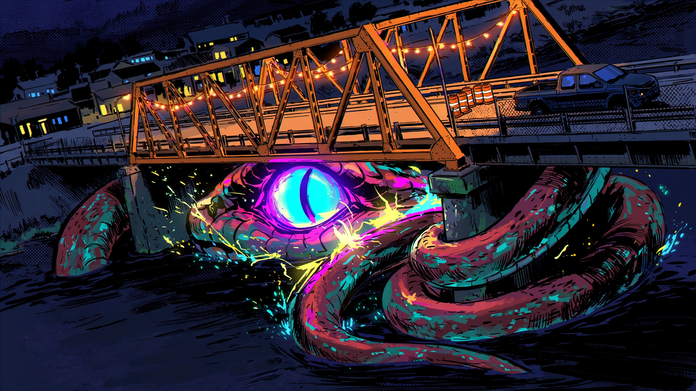
E_r2/hook_bridge.webp : hook (26.2 s). Best wow, but serpent lost its copper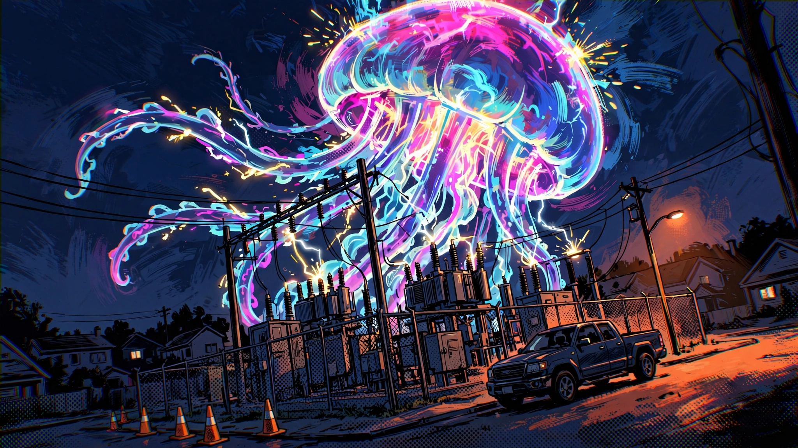
E_r2/climax_substation.webp : climax (25.0 s). Strongest image of the test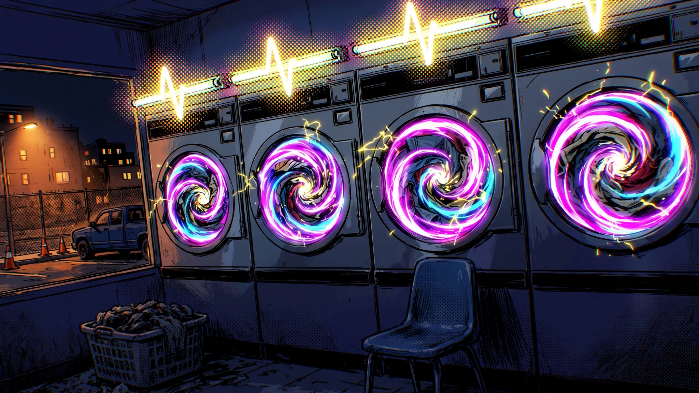
E_r2/moment_laundromat.webp : moment, high (21.7 s)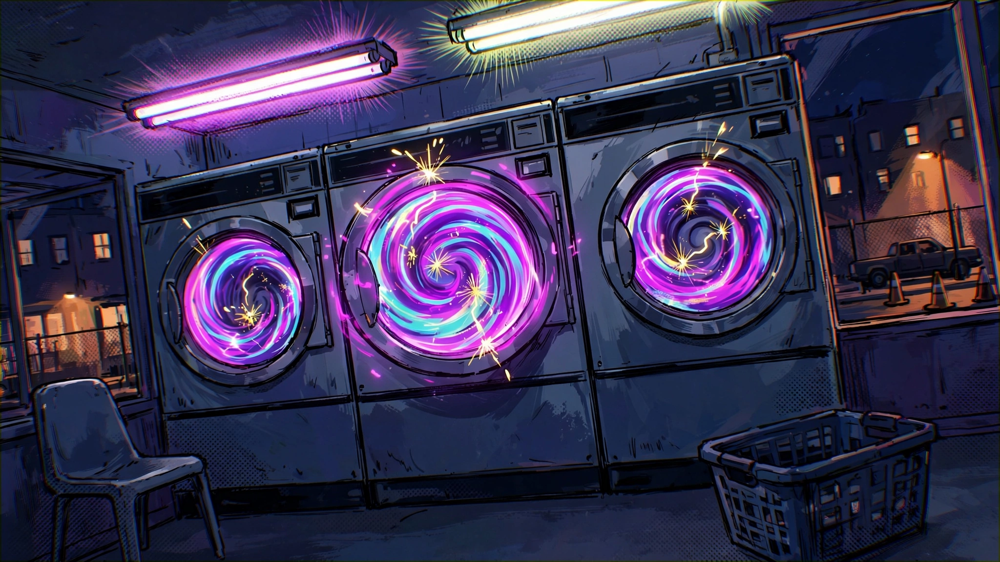
E_r2/moment_laundromat_LOW.webp : same prompt, reasoning_strength low (10.8 s). Lost the heartbeat idea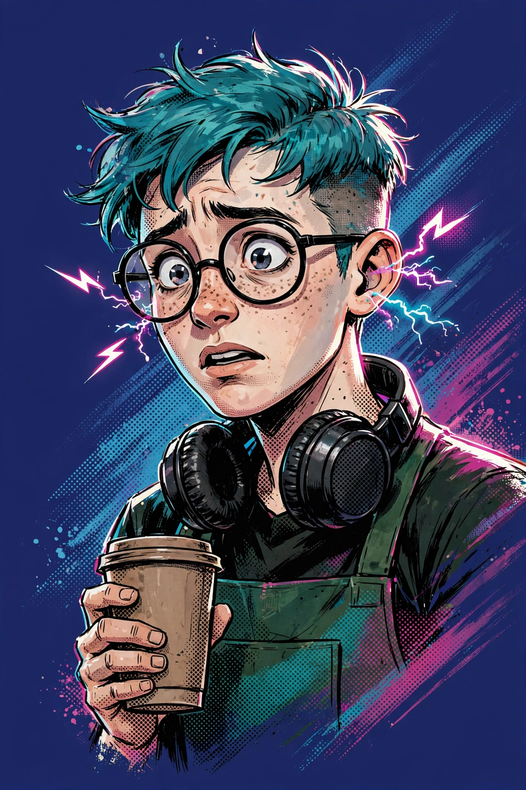
E_r2/portrait_barista.webp : hero portrait (18.0 s)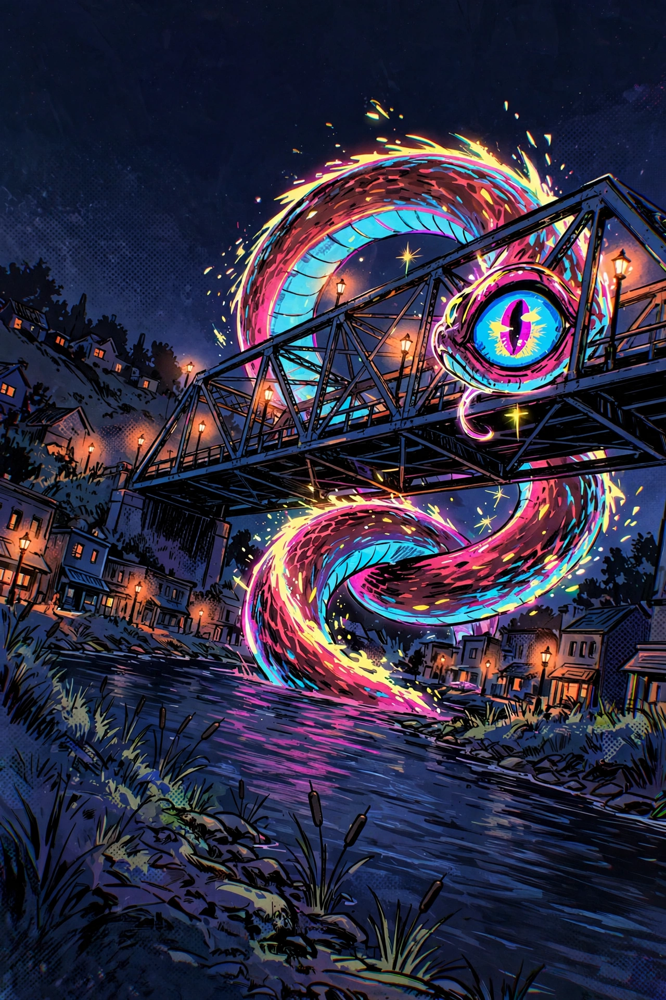
E_r2/cover_bridge.webp : storybook cover, title space on top (37.5 s). Creature too cute
E round 3: material fix, twist, and identity test
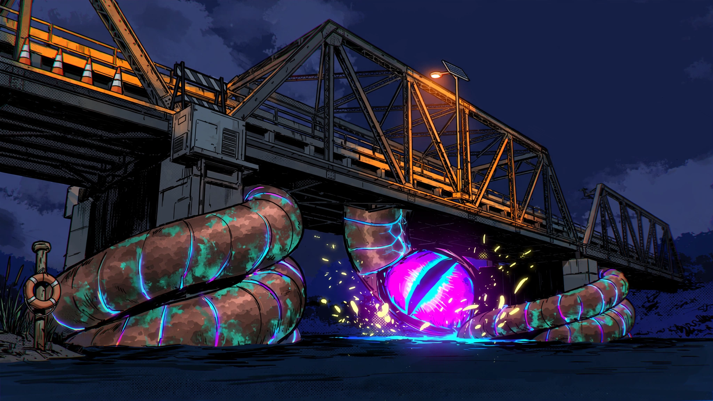
E_r3/hook_bridge_v3.webp : hook v3 (24.6 s). Copper and verdigris back, but coils read as pipes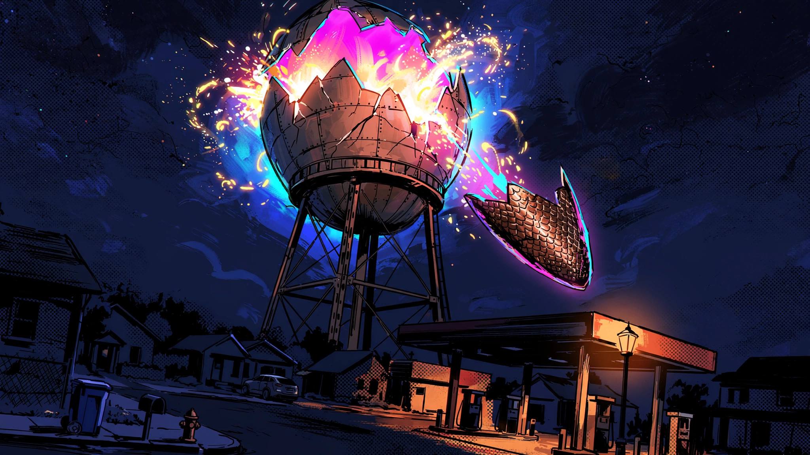
E_r3/twist_watertower.webp : twist, same town (11.7 s)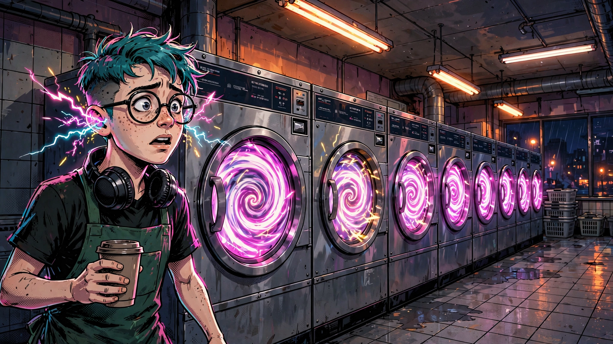
E_r3/edit_barista_in_laundromat.webp : /images/edits with the portrait as reference (32.0 s). Identity holds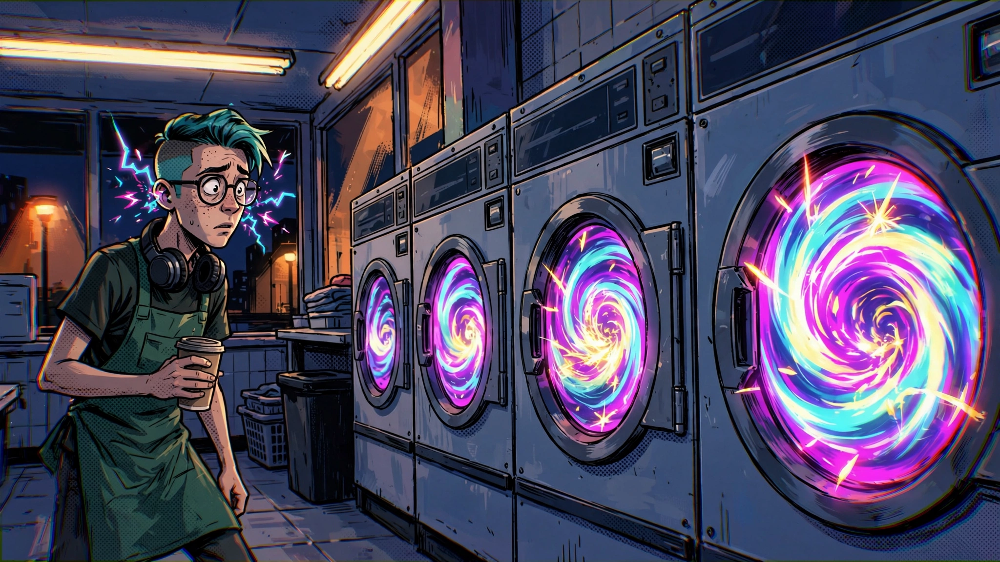
E_r3/control_barista_in_laundromat_noref.webp : control, text description only (11.9 s). Same costume, different face
Portraits at phone-avatar size (56 px)